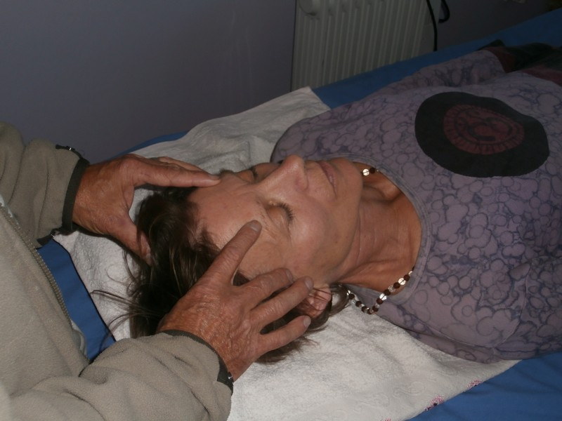

Claude Maire
Il y a quelques années j'ai fait l'expérience de la dépression et de l’insomnie ……
Pour mon retour graduel à la santé, j'ai rencontré des médecins généralistes,
des spécialistes, acupuncteur et homéopathe. Ensuite j’ai eu la chance de découvrir
le yoga de l’Énergie qui m’a reconnecté avec mon corps et mes émotions
ainsi qu’un travail sur l’analyse des rêves qui me permet de me nettoyer intérieurement.
Je remercie infiniment toutes ces personnes rencontrées en chemin.
L’ouverture de la population vers les soins alternatifs grandit
et on commence à voir dans certains hôpitaux des hypnothérapeutes,
des magnétiseurs, des massages sur les lieux de travail.........
Tout cela m’a incité à me former auprès de thérapeutes connus
et confirmés pour à mon tour soigner autrement…
Je vous propose : soin et bilan énergétique, thème de naissance (astrologie chinoise),
yoga individualisé, processus de libération des croyances…
Prenez soin de vous...
.
Sylvie Maire
Formée à l'Ecole de Yoga de l'Energie, UNITE ET HARMONIE (Directeur et Formateur Giorgio CAMMARATA).
Qu'est ce que le Yoga de l'Energie? C'est un Hatha-Yoga qui a été adapté aux occidentaux par Monsieur Roger CLERC.
La pratique régulière du yoga favorise :
- Une meilleure santé physique grâce aux postures qui permettent d'entretenir, assouplir votre corps : mobilité, flexibilité, tonification des muscles, du squelette...
- Une meilleure respiration, en conscience, pour apprendre à sentir, ressentir son corps afin de le libérer des tensions, des crispations.... et bouger avec aisance
- Le calme, la détente, la concentration, la créativité grâce aux temps de relaxation, de pause.....
- Une plus grande présence à son corps, un esprit moins soumis aux pensées récurrentes..... Le yoga s'adresse à tous et chacun peut évoluer en fonction de ses possibilités parce que c'est un moment précieux que vous vous accordez.
-Le yoga apporte le calme intérieur, plus de présence à soi, donne confiance en soi et permet d'être plus heureux, serein quoiqu'il arrive.
"Vivez votre propre Vie, là où vous êtes, avec ce que vous êtes, avec qui vous êtes"
Swami Prajnanpad
Le traitement 'Access Bars' par Claude et Sylvie
Les Bars d'Access sont un toucher léger de 32 points crâniens.
Cela n'est pas un soin mais un processus corporel de libération.
Cette technique permet d'effacer la charge électromagnétique qui
maintient en place nos croyances, pensées, considérations, émotions,
conclusions que nous avons et qui nous limitent dans tous les domaines.
Ce processus apporte une profonde détente et permet de lâcher
tout ce que nous portons de négatif en nous.
En activant ces points, les surcharges s'évacuent naturellement.
Quand dans votre vie des situations se répètent encore et encore
c'est que vous êtes dirigés inconsciemment par ces vieilles mémoires.
Le processus se pratique sur une table de massage,
couvert et confortablement installé.
.
Le traitement 'Toucher Métamorphique' par Sylvie
Une technique de nettoyage de nos anciennes mémoires, de notre histoire (de notre conception à notre naissance) .
Se pratique sur chaque pieds : aide aussi aux troubles du sommeil, stress........ ( le toucher est aussi destiné aux enfants)
Contact
Claude Maire / Sylvie Maire
SCI Boutières Bien-être.
.
Claude: 04 75 64 08 41 ou 06.47.18.11.47
Mail
Site
.
Sylvie: 04 75 64 08 41 ou 06.49.86.72.79
Mail
Site
